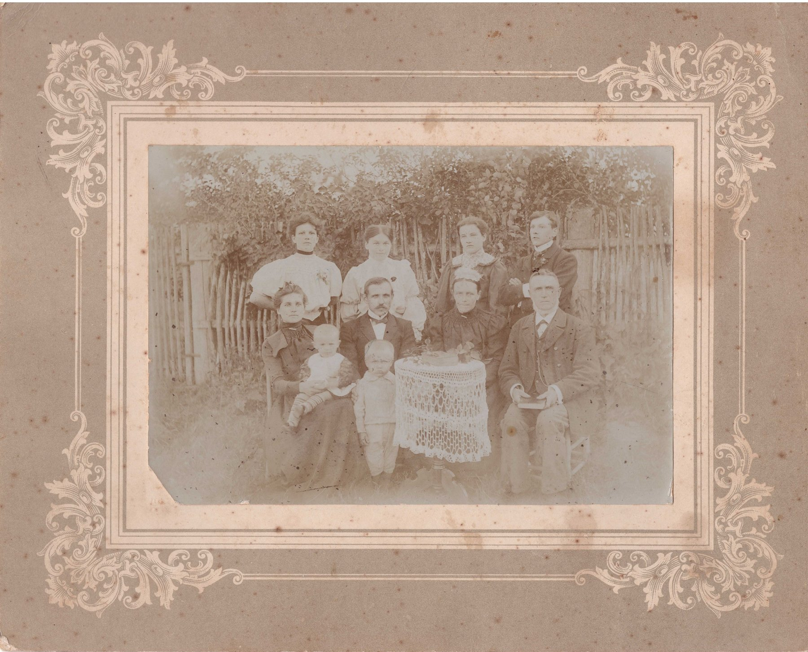
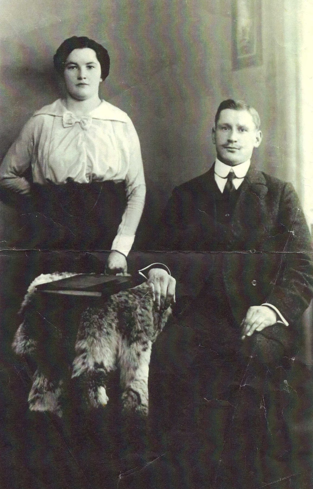
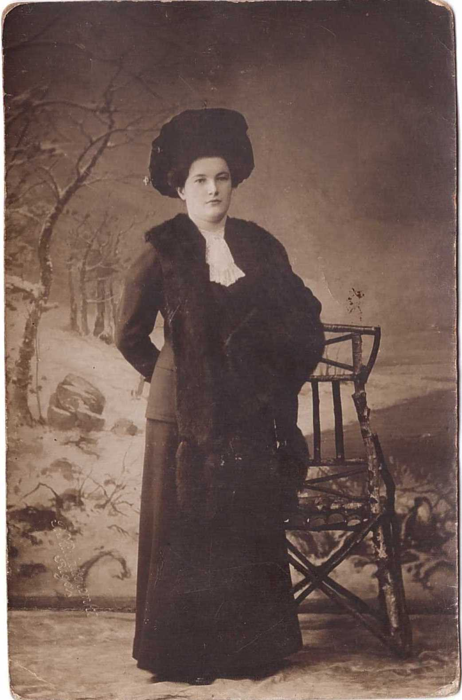
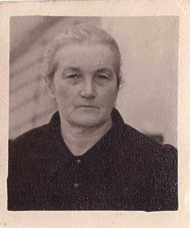
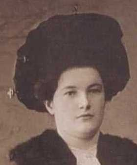

Alma Leontīne Āboltiņa 1887–1959
Wife of Peter's great-great-uncle Dāvis Sirlaks.
Also recorded as Alma Sirlaka; Alma (Leontina) Āboltiņa (married name Sirlaka).
Alma Leontīne Āboltiņa was born on 28 Mar 1887 in Salaca parish, Vidzeme, Latvia2,3,4, the daughter of Ancis Āboltiņš and Dārta Āboltiņa12. She married Dāvis Sirlaks about 1915 in Salaca parish, Vidzeme, Latvia3,13. She died on 26 Jan 1959 in Vīstuči farm, Jaunrauna, Rauna, Cēsis district, Vidzeme, Latvia3,8,9 and was buried at Jaunrauna cemetery, Jaunrauna, Rauna, Cēsis district, Vidzeme, Latvia (according to an online family tree)10.
Family
- Parents
- Ancis Āboltiņš b. 1839 and Dārta Āboltiņa b. 1855 documented
- Husband
- Dāvis Sirlaks 1886–1952 · married about 1915 in Salaca parish, Vidzeme, Latvia3,13
- Children
- Jānis Sirlaks 1916–1918 documented
- Velta Skaidrīte Sirlaka 1918–2015 documented
- Aina Modrīte Sirlaka 1920–2003 documented
- Ilga Laimdota Sirlaka 1922–2011 documented
- Valdis Laimdots Sirlaks 1924–1995 documented
Life events
| Event | Date | Place and details |
|---|---|---|
| Born | 28 Mar 1887 | Salaca parish, Vidzeme, Latvia Old Style (Julian) date: 16 Mar 18872,3,4 |
| Lived | bet 1905 and 1915 | Rīga, Vidzeme, Latvia5 |
| Work | bet 1905 and 1915 | Salaca manor (Salacas muiža), Salaca parish, Vidzeme, Latvia Domestic servant/housekeeper before marriage; one year in Switzerland (album of Swiss views kept by Ilga). Her savings went to buy out the family farm "Ļekunkas". Youthful love: Ludvigs Eglītis (1892–1982), whose father forbade the match.6 |
| Married | abt 1915 | with Dāvis Sirlaks Salaca parish, Vidzeme, Latvia3,13 |
| Died | 26 Jan 1959 | Vīstuči farm, Jaunrauna, Rauna, Cēsis district, Vidzeme, Latvia3,8,9 |
| Work | Lauksaimniece According to an online family tree7 | |
| Buried | Jaunrauna cemetery, Jaunrauna, Rauna, Cēsis district, Vidzeme, Latvia According to an online family tree10 | |
| Note | Siblings: Voldemārs, Zelma, Alīda, Alfrēds. "(dvīņi)" = twins, most naturally Alfrēds and Alma (so Alfrēds b. 16 Mar 1887 too).11 |
Possible records (not confirmed)
Records that may concern her, but don't settle it: an initial and a surname only, a family recollection, or a reading that needs a second look. Each links to the record.
- Other: LEAD (M): Alma’s death: 26 Jan 1959 (register) vs "February" (p. 3) vs pen "1952" (p. 38); cemetery of her (and Valdis’s) grave.14 Would be settled by: Rauna/Jaunrauna civil death register 1959; gravestone (probably Jaunrauna cemetery).
- Burial: Her son Valdis was buried beside her in Oct 1995; the cemetery is not named (probably Jaunrauna, where Velta was later buried too).14 Cemetery inferred.
Photographs







Sources
- MyHeritage family tree 'Dzimta' of Peter's third cousin (his family site), member GEDCOM export of 26 Oct 2026, I17 (person-6000017), GEDCOM lines 735–819.
NAME Alma (Leontina) /Āboltiņa/ · _MARNM Sirlaka
- Ainas Sirlakas atmiņas ("Vīstuči"), Aina Jurciņa née Sirlaka, Priekuļi, 1998, pp. 22, 6, section "LEJAS VĪSTUČOS SAVU DZIMTAS KOKU IESTĀDA MĀRČA MAZDĒLS DAVIDS".
Alma Leontīne Sirlaka 1887.16.III-1959.26I … Reiz Valdis, Ilga un es stāvējām Salacā pie pirtiņas krāsns drupām, kurā dzimusi mūsu mamma.
Translation: Alma Leontīne Sirlaka, 16 March 1887 – 26 I 1959 … Once Valdis, Ilga and I stood at Salaca by the ruins of the bathhouse stove in which our mamma was born.
Born 16 Mar 1887 at Salaca, in a bathhouse. Probably Julian if from a church record (= 28 Mar Gregorian), but may be a family date.
- Raimonds Voronins, family tree shared on FamilyTreeDNA (Sirlaks / Gibboy lines), Dāvis Sirlaks family.
- MyHeritage family tree 'Dzimta' of Peter's third cousin (his family site), member GEDCOM export of 26 Oct 2026, I17 (person-6000017), GEDCOM lines 735–819.
BIRT · 16 MAR 1887 · Salacas pagasts
Date: Julian (Old Style), as in the church books: = 28 Mar 1887 (Gregorian), as we have it. His record match: BillionGraves, https://www.myheritage.lv/research/collection-10147/billiongraves?itemId=41171405&action=showRecord: 'Alma Sirlaka | Dzimšana: 1887 | Miršana: 1953 | Apglabāšana: Jaunraunas Kapi, Priekuļu Pagasts, Priekuļi Municipality, Latvia | Ieguldītājs: MyHeritage darbinieki un draugi | Radinieki: AttiecībasVārdsDzimšanaMiršanaPēteris Sirlaka18471935Marija Sirlaka18531925Dāvis Sirlaka18861952Jānis Sirlaka19161918Valdis Sirlaka19241935 | Vairāk fotogrāfijas:'.
- Alma Āboltiņa's service in Rīga and marriage to Dāvis Sirlaks.
Davids apprecēja Almu Āboltiņu no Salacas, iepazīdams Rīgā darba gaitās. … Gāja dienēt pie kungiem. Salacas muižā un Rīgā. Pie miljonāriem.
Worked in domestic service for wealthy families at Salaca manor and in Rīga, where she met her husband Dāvis Sirlaks (who worked as a bricklayer in Rīga) before moving with him to Vīstuči by 1915.
- Ainas Sirlakas atmiņas ("Vīstuči"), Aina Jurciņa née Sirlaka, Priekuļi, 1998, p. 23, section "MŪSU MAMMA, DĀRTAS UN ANČA MEITA".
Gāja dienēt pie kungiem. Salacas muižā un Rīgā. Pie miljonāriem. … Šveicē mamma nodzīvoja vienu gadu.
Translation: She went into service with the gentry: at Salaca manor and in Rīga. With millionaires. … Mamma lived in Switzerland for one year.
Domestic servant/housekeeper before marriage; one year in Switzerland (album of Swiss views kept by Ilga). Her savings went to buy out the family farm "Ļekunkas". Youthful love: Ludvigs Eglītis (1892–1982), whose father forbade the match.
- MyHeritage family tree 'Dzimta' of Peter's third cousin (his family site), member GEDCOM export of 26 Oct 2026, I17 (person-6000017), GEDCOM lines 735–819.
OCCU · Lauksaimniece
- Ainas Sirlakas atmiņas ("Vīstuči"), Aina Jurciņa née Sirlaka, Priekuļi, 1998, pp. 22, 3, 38, section "LEJAS VĪSTUČOS SAVU DZIMTAS KOKU IESTĀDA MĀRČA MAZDĒLS DAVIDS".
Alma Leontīne Sirlaka 1887.16.III-1959.26I … Kad nomira, Elza palīdzēja. Saģērbām. Noguldījām uz grīdas. Visus logus vaļā. Tas bija februāris. … [handwritten: Sirlaka] Alma [handwritten: 1887 - 1952.]
Translation: Alma Leontīne Sirlaka, 1887 – 26 I 1959 … When she died, Elza helped. We dressed her and laid her on the floor. All the windows open. It was February. … [pen] Alma Sirlaka 1887–1952
Printed "1959.26I" (26 January 1959, or a dropped stroke of 26.II); Ilga says she died in February (p. 3); a pen note on p. 38 has "1887 - 1952", probably confused with Dāvis's year. Zelma died one year after her, c. 1960 (p. 25). Laid out by Elza Sirlaka, in a white burial dress Elza had sewn.
- MyHeritage family tree 'Dzimta' of Peter's third cousin (his family site), member GEDCOM export of 26 Oct 2026, I17 (person-6000017), GEDCOM lines 735–819.
DEAT · 26 JAN 1959 · AGE 71
His record match: BillionGraves, https://www.myheritage.lv/research/collection-10147/billiongraves?itemId=41171405&action=showRecord: 'Alma Sirlaka | Dzimšana: 1887 | Miršana: 1953 | Apglabāšana: Jaunraunas Kapi, Priekuļu Pagasts, Priekuļi Municipality, Latvia | Ieguldītājs: MyHeritage darbinieki un draugi | Radinieki: AttiecībasVārdsDzimšanaMiršanaPēteris Sirlaka18471935Marija Sirlaka18531925Dāvis Sirlaka18861952Jānis Sirlaka19161918Valdis Sirlaka19241935 | Vairāk fotogrāfijas:'.
- MyHeritage family tree 'Dzimta' of Peter's third cousin (his family site), member GEDCOM export of 26 Oct 2026, I17 (person-6000017), GEDCOM lines 735–819.
BURI · Jaunraunas kapi, Latvija
His record match: BillionGraves, https://www.myheritage.lv/research/collection-10147/billiongraves?itemId=41171405&action=showRecord: 'Alma Sirlaka | Dzimšana: 1887 | Miršana: 1953 | Apglabāšana: Jaunraunas Kapi, Priekuļu Pagasts, Priekuļi Municipality, Latvia | Ieguldītājs: MyHeritage darbinieki un draugi | Radinieki: AttiecībasVārdsDzimšanaMiršanaPēteris Sirlaka18471935Marija Sirlaka18531925Dāvis Sirlaka18861952Jānis Sirlaka19161918Valdis Sirlaka19241935 | Vairāk fotogrāfijas:'.
- Ainas Sirlakas atmiņas ("Vīstuči"), Aina Jurciņa née Sirlaka, Priekuļi, 1998, p. 23, section "MŪSU MAMMA, DĀRTAS UN ANČA MEITA".
Viņiem bija šādi bērni: Voldemārs, Zelma, Alīda, Alfrēds un Alma (dvīņi).
Translation: They had these children: Voldemārs, Zelma, Alīda, Alfrēds and Alma (twins).
Siblings: Voldemārs, Zelma, Alīda, Alfrēds. "(dvīņi)" = twins, most naturally Alfrēds and Alma (so Alfrēds b. 16 Mar 1887 too).
- Ainas Sirlakas atmiņas ("Vīstuči"), Aina Jurciņa née Sirlaka, Priekuļi, 1998, p. 23, section "MŪSU MAMMA, DĀRTAS UN ANČA MEITA".
MŪSU MAMMA, DĀRTAS UN ANČA MEITA … Pēc uzvārda Āboltiņi.
Translation: OUR MAMMA, DAUGHTER OF DĀRTA AND ANCIS … By surname, Āboltiņš.
Parents: Ancis (Ansis/Jānis) Āboltiņš, tailor, and Dārta. p. 9: "Almu Āboltiņu no Salacas". Mother spelt "Dārta Āboliņa" on p. 26.
- Ainas Sirlakas atmiņas ("Vīstuči"), Aina Jurciņa née Sirlaka, Priekuļi, 1998, p. 9, section "PAR PĒTERA UN MARIJAS PIEKTO BĒRNU DĀVIDU".
Davids apprecēja Almu Āboltiņu no Salacas, iepazīdams Rīgā darba gaitās.
Translation: Davids married Alma Āboltiņa of Salaca, having met her while working in Rīga.
spouse: Alma Leontīne Āboltiņa. Wedding in Salaca church (p. 23: "Salacas kāzās baznīcā nobučoja sievas mātei roku"). Year: Emīlis married in 1930, "15 years later than Davids" (p. 22), so c. 1915; first child Jānis b. 1916.
- S-aina-memoir-ainas-sirlakas-atminas-vistuci-aina-jurcina.